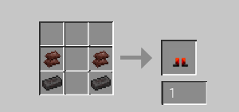

Instant Death Sword: Apply the Wither effect to all those who
stand in your way!!!!
MUAHHHHH HAH AH HAH AHHAHAH HAH HAH AHH AH HA AH
MUAHHHHH HAH AH HAH AHHAHAH HAH HAH AHH AH HA AH
Needs: Smelt a Netherite Sword
that was overkill, man
(this is my mod i have to sell it in order for them to download it)
If netherite can be thrown in lava and be fine, how does a small furnace change it so much?
NOT INSTANT DEATH THAT'S JUST MARKETING PURPOSES
Lava walking boots: Walk over lava!
Needs: 2 Netherite Ingots, 2 Netherite scraps

Magic Pickaxe: Mine Instantly! (even obsidian!)
Needs: 2 wooden pickaxes,
2 stone pickaxes, 2 iron pickaxes,
1 diamond pickaxe,
1 Netherite pickaxe, and 1 stick
This is the icon for this mod!
funny rainbow pickaxe.
It looks cool!
(don't listen to them they don't know any Minecraft stuff)
(don't listen to them they don't know any Minecraft stuff)
Don't dig down. It digs faster than you fall. You'll see what I mean.
Multitool: An axe, a pickaxe, a hoe, and a shovel all at once!
(Totally not ripped off or anything)
Needs: 6 diamonds, 1 stick

(it's a total ripoff)
...but how would you know that (GASP)
Paxel is a much cooler name. Just saying.
Slime Boots: No more fall damage!
Needs: 4 slime blocks
Wouldn't slime.. bounce.. you?
Slingshot: Launch pebbles at mobs! (made with cobblestone)
Needs: 1 string, 6 sticks
The second best item in Minecraft- after tuff, of course!
Hey, you haven't responded yet!
TUFF IS THE WORST BLOCK EVER EXISTED WHY WOULD THEY MAKE THAT NOOOOOO
Springy Boots: Jump higher!
Needs: 2 chains, 2 slime blocks, 2 honey blocks
CHAINS DO NOT BOUNCE.
It's the closest thing that I could find to a spring!
Do you see what I have to put up with while
helping with this website?
glumph.
Springy Slime Boots: A combination of Springy and Slime Boots!
Needs: See above for the obvious recipe
This has to be the most illogical thing on the website. Yes, that's a word.
Come on, we're talking about MINECRAFT. NOTHING IS MORE ILLOGICAL THAN MINECRAFT.
...except these boots.
Super Slime Block: Jump super high!
Needs: 9 slime blocks

I seem to like slime blocks...
You don't say.
I do say.
It's a saying.
Water Breathing/Swimming/Walking Armor: See armor name for details
Needs: See below images.
Chekin just named the recipe for this "Special Image". Seriously?
DO INSPECT ELEMENT TO WITNESS THE EPICNESS OF MY CODING
Showoff. My computer can't DO inspect element!
HEHEHEHEHEHH MAUHHHHAHAHAHAHHAHAHAHA
Please explain why the computer thinks my name is "Flicke".
Chekin added a comment next to the name of the recipe saying "TAAAA DAAAAAA".
GO INSIDE SEE THE AMAZINGNESS (hey let them see for themselves!)
Comments don't show up anywhere else. ...you do know that, right?
Well, that's the end of the recipes for now!
(To be continued... DUN DUN DUNNNNNNNNNNNNN)